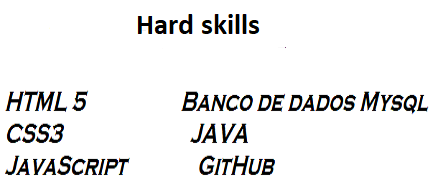

E-mail : josecarlos19612503@gmail.com
Telefone : (11) 96895-1412 - São Paulo Sp
Objetivo : Dev web (Html Css Javascript / Dev Junior)
Formação Superior em : Análise e desenvolvimento de sistemas
Cursos extras-curriculares (Desenvolvimento Web)na área de tecnologia.
Inglês Básico , leitura e compreensâo do conteúdo.

